Amendment #217 (S.O. 452(E), 1991)
29 changes: 1 to the First Schedule, 28 to the Second Schedule. 29 applied
What it did to the ministries
- endedMinistry of Programme Implementation is abolished · histories: Programme Implementation
- splitEnergy divides into Power and Non-Conventional Energy Sources, and Coal. change 8, 23, 24 · histories: Energy, Power and Non-Conventional Energy Sources, Coal
- splitMinistry of Food and Civil Supplies splits into Ministry of Civil Supplies & Public Distribution (16) and Ministry of Food (16) change 7, 8, 10, 11, 12, 13 · histories: Food and Civil Supplies, Civil Supplies, Consumer Affairs and Public Distribution, Food
- splitMinistry of Petroleum and Chemicals splits into Ministry of Petroleum and Natural Gas (16) and Ministry of Chemicals & Fertilizers (15) change 3, 16, 17, 18, 19, 20 · histories: Petroleum and Chemicals, Petroleum, Chemicals & Fertilizers
- splitMinistry of Steel and Mines splits into Ministry of Steel (9) and Ministry of Mines (7) change 18, 22, 23, 25, 26, 27 · histories: Steel and Mines, Steel, Mines
- spun offMinistry of Rural Development is separated from Ministry of Agriculture (18 subjects) change 2, 3, 24 · histories: Agriculture, Rural Development
- moved14 subjects move from Ministry of Welfare to Ministry of Human Resource Development change 14, 28, 29 · histories: Social Justice, Education
- renamedMinistry of Civil Aviation is renamed Ministry of Civil Aviation and Tourism change 3, 4, 5, 6, 7 · histories: Civil Aviation
- renamedMinistry of Law and Justice is renamed Ministry of Law, Justice and Company Affairs change 15, 16, 17, 18 · histories: Law and Justice
- renamedMinistry of Planning is renamed Ministry of Planning and Programme Implementation change 18, 22, 23 · histories: Planning and Programme Implementation
- grewMinistry of Law, Justice and Company Affairs grows from 45 to 54 subjects change 15, 16, 17, 18 · histories: Law and Justice
The order, page by page
Page 1 of 12
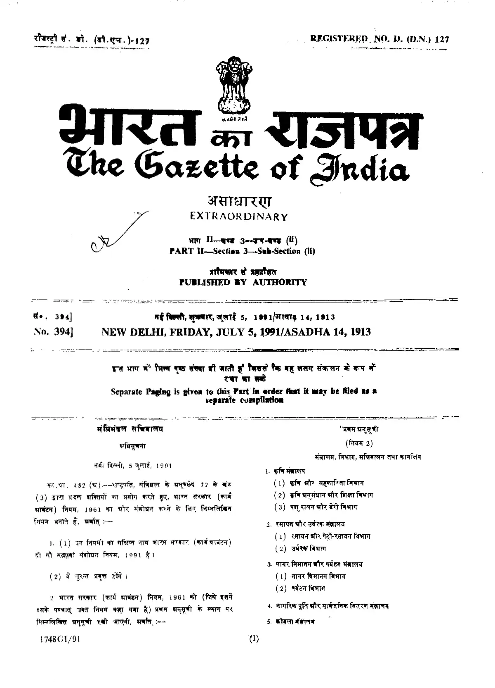
Page 2 of 12
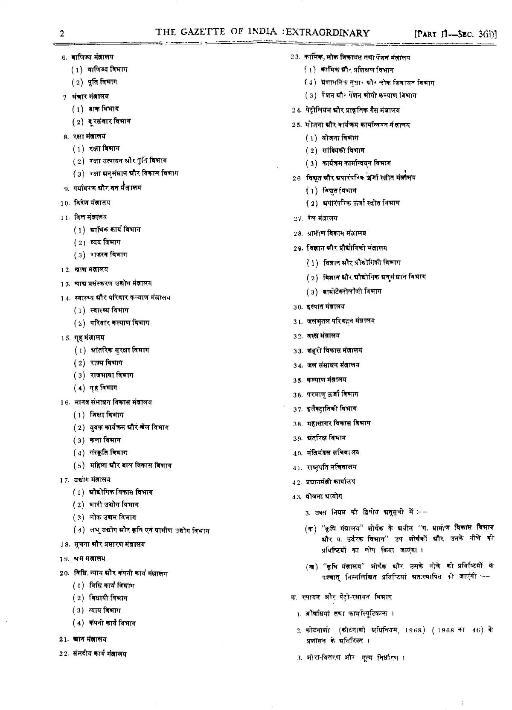
Page 3 of 12
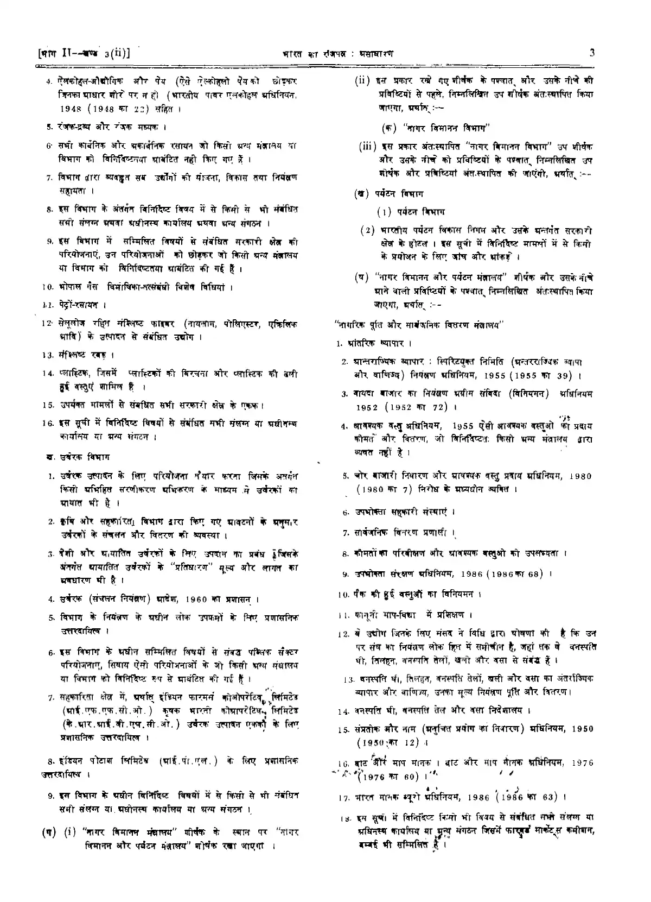
Page 4 of 12
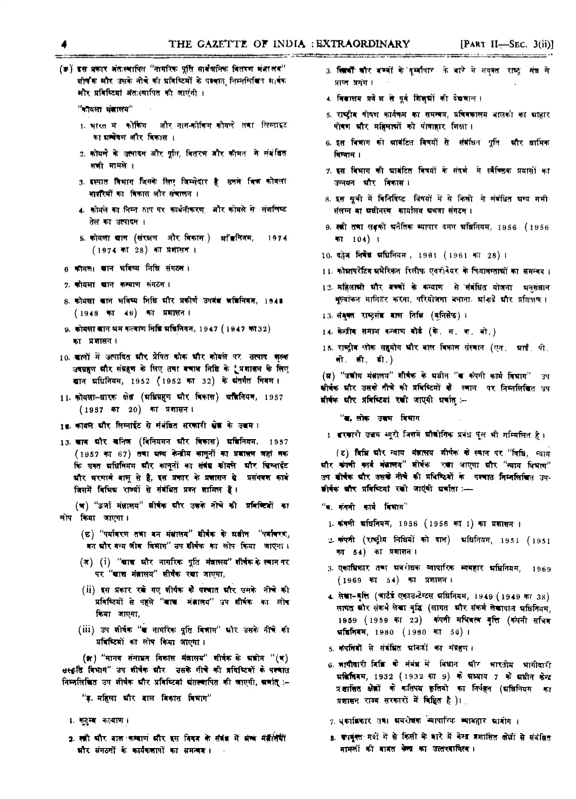
Page 5 of 12
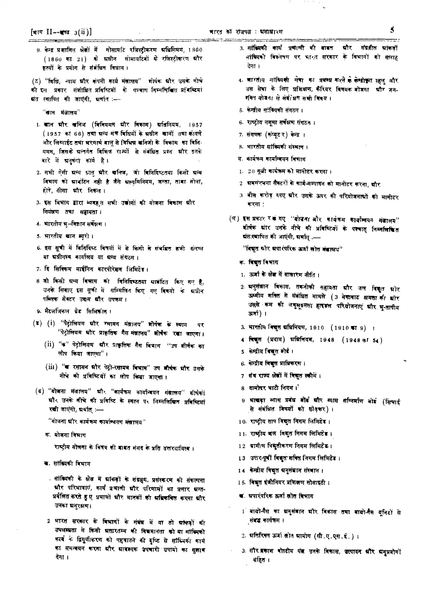
Page 6 of 12
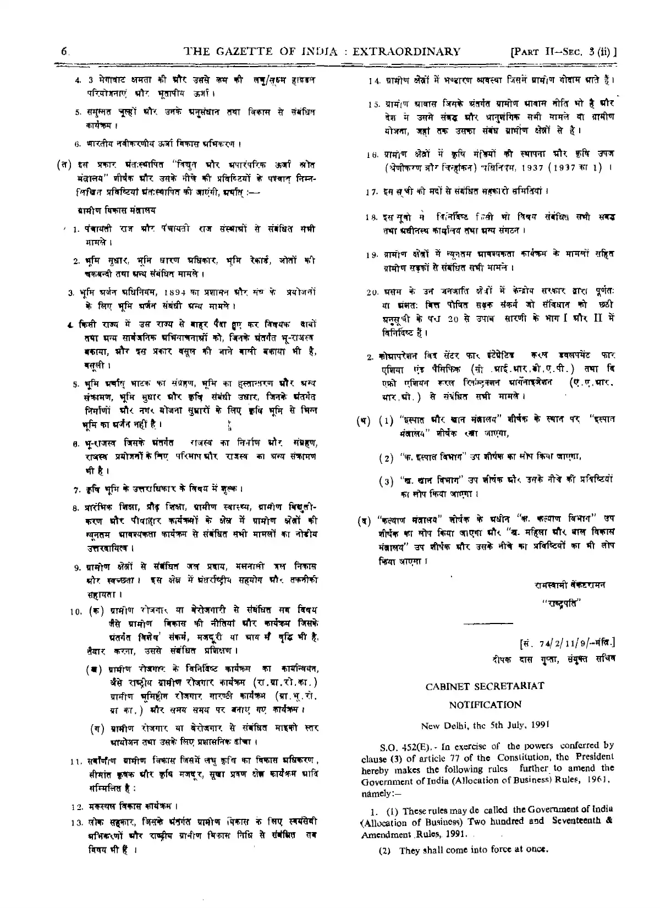
Page 7 of 12
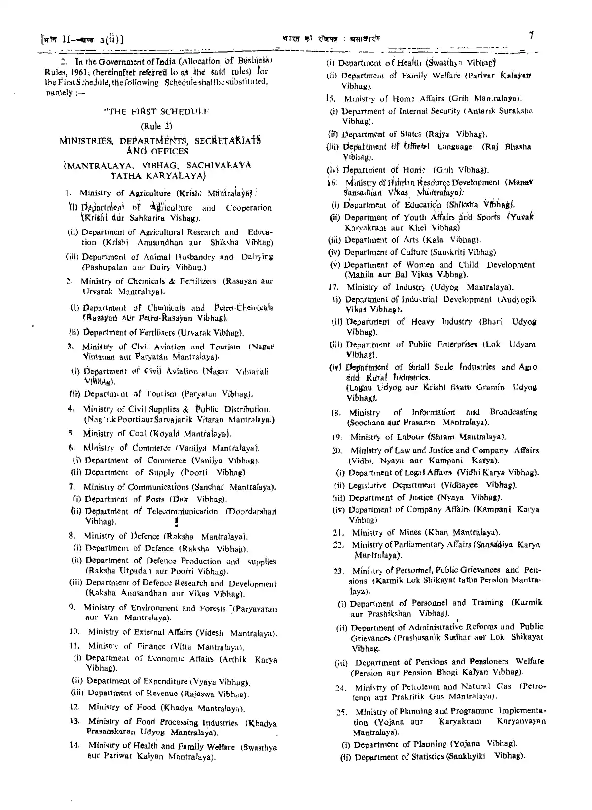
1Schedule 1
- THE FIRST SCHEDULE (Rule 2) MINISTRIES, DEPARTMENTS, SECRETARIAS AND OFFICES (MANTRALAYA, VIBHAG, SACHIVALAYA TATHA KARYALAYA)
- 1. Ministry of Agriculture (Krishi Mantralaya, i (1) Department of Aiculture and Cooperation Krishi dur Sahkarita Vishag).
- ii. Department of Agricultural Research and Education
- iii. Department of Animal Husbandry and Dairying
- 2. Ministry of Chemicals & Fertilizers (1)Department of Chemicals and Petro-Chemicals
- ii. Department of Fertilisers
and 80 more
- 3. Ministry of Civil Aviation and Tourism
- i. Department of Civil Aviation (Nagar Vilmahati VIBHAR).
- i. Department of Tourism
- 4. Ministry of Civil Supplies & Public Distribution.
- 3. Ministry of Coal
- 6. Ministry of Commerce
- i. Department of Commerce
- i. Department of Supply
- 7. Ministry of Communications
- i. Department of Posts
- ii. Department of Telecommunication
- 8. Ministry of Defence (I) Department of Defence
- ii. Department of Defence Production and supplies
- iii. Department of Defence Research and Development
- 9. Ministry of Environment and Forests
- 10. Ministry of External Affairs
- 11. Ministry of Finance
- i. Department of Economic Affairs
- ii. Department of Expenditure
- iii. Department of Revenue
- 12. Ministry of Food
- 13. Ministry of Food Processing Industries
- 14. Ministry of Health and Family Welfare
- i. Department of Health
- ii. Department of Family Welfare
- 15. Ministry of Hom: Affairs
- i. Department of Internal Security
- ii. Department of States
- ii. Department of Offal Language
- iv. Department of Home is: Ministry of Human Resource Development
- i. Department of Education
- ii. Department of Youth Affairs and Sports
- iii. Department of Arts
- iv. Department of Culture
- v. Department of Women and Child Development
- 17. Ministry of Industry
- i. Department of Industrial Development
- i. Department of Heavy Industry
- iii. Department of Public Enterprises
- iv. Department of Small Scale Industries and Agro and Rural Industries.
- 18. Ministry of Information and Broadcasting
- 19. Ministry of Labour
- 20. Ministry of Law and Justice and Company Affairs (Vidhi, Nyaya aur Kampani Karya).
- i. Department of Legal Affairs
- ii. Legislative Department (Vidhayee Vibhag).
- iii. Department of Justice
- iv. Department of Company Affairs
- 21. Ministry of Mines
- 22. Ministry of Parliamentary Affairs
- 23. Ministry of Personnel, Public Grievances and Pensions
- i. Department of Personnel and Training
- ii. Department of Adininistrative Reforms and Public Grievances
- iii. Department of Pensions and Pensioners Welfare
- 24. Ministry of Petroleum and Natural Gas
- 25. Ministry of Planning and Programme Implementa tion
- i. Department of Planning
- ii. Department of Statistics
- iii. Department of Programme Implementation
- 26. Ministry of Power and Non-Conventional Energy Sources
- i. Department of Power
- il. Department of Non Conventional Energy Sources
- 27. Ministry of Railways
- 28. Ministry of Rural Development
- 29. Ministry of Science and Technology (1) Department of Science and Technology
- ii. Department of Scientific and Industrial Research
- ili. Department of Bio-Technology
- 30. Ministry of Steel
- 31. Ministry of Surface Transport
- 32. Ministry of Textiles
- 33. Ministry of Urban Development
- 34. Ministry of Water Resources
- 35. Ministry of Welfare
- 36. Department of Atomic Energy
- 37. Department of Electronics
- 30. Department of Ocean Development
- 39. Department of Space
- 40. Cabinet Secretariat
- 41. President's Secretariat
- 42. Prime Minister's Office (Pradhan Mantri Karyalaya)
- 43. Planning Commission
applied at schedule 1 in the Rules after #217
read page break
Page 8 of 12
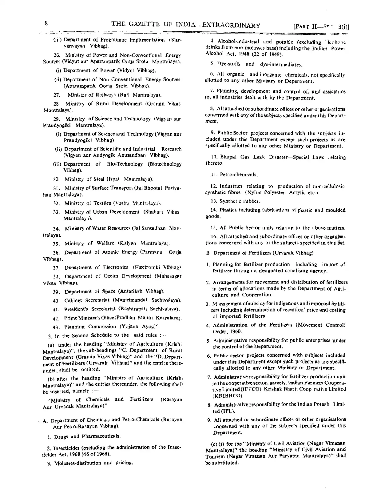
234Schedule 2 › Ministry of Agriculture › Department of Rural Development; Schedule 2 › Ministry of Agriculture › Department of Fertilizers
applied at schedule 2 › ministry MINISTRY OF AGRICULTURE › department C in the Rules after #217
after Schedule 2 › Ministry of Agriculture
- Ministry of Chemicals and Fertilizers
- A. Department of Chemicals and Petro-Chemicals
- 1. Drugs and Pharmaceuticals.
- 2. Insecticides (excluding the administration of the Insecticides Act, 1968 (46 of 1968).
- 3. Molasses-distibution and pricing.
- 4. Alcohol-industrial and potable (excluding 'lcoholic drinks from non-molasses base) including the Indian Power Alcohol Act, 1948 (22 of 1948).
and 22 more
- 5. Dye-stuffs and dye-intermediates.
- 6. All organic and inorganic chemicals, not specifically allotted to any other Ministry or Department.
- 7. Planning, development and control of, and assistance to, all industries dealt with by the Department.
- 8. All attached or subordinate offices or other organisations concerned with any of the subjects specified under this Department.
- 9. Public Sector projects concerned with the subjects included under this Department except such projects as are specifically allotted to any other Ministry or Department.
- 10. Bhopal Gas Leak Disaster-Special Laws relating thereto.
- II. Petro-chemicals.
- 12. Industries relating to production of non-cellulosic synthetic fibres (Nylon Polyester. Acrylic etc.)
- 13. Synthetic rubber.
- 14. Plastics including fabrications of plastic and moulded goods.
- 15. All Public Sector units relating to the above matters.
- 16. All attached and subordinate offices or other organisations concerned with any of the subjects specified in this list.
- B. Department of Fertilizers
- 1. Planning for fertilizer production including import of fertilizer through a designated canalising agency.
- 2. Arrangements for movement and distribution of fertilizers in terms of allocations made by the Department of Agriculture and Cooperation.
- 3. Management of subsidy for indigenous and imported fertilizers including determination of retention' price and costing of imported fertilizers.
- 4. Administration of the Fertilizers (Movement Control) Order, 1960.
- 5. Administrative responsibility for public enterprises under the control of the Department.
- 6. Public sector projects concerned with subjects included under this Department except such projects as are specifically allotted to any other Ministry or Department.
- 7. Administrative responsibility for fertilizer production unit in the cooperative sector, namely, Indian Farmers Cooperative Limited (IFFCO), Krishak Bharti Coop rative Limited (KRIBHCO).
- 8. Administrative responsibility for the Indian Potash Limited (IPL).
- 9. All attached or subordinate offices or other organisations concerned with any of the subjects specified under this Department.
applied at schedule 2 › ministry Ministry of Chemicals and Fertilizers in the Rules after #217
read page break
Schedule 2 › Ministry of Civil Aviation
- Ministry of Civil Aviation and Tourism (Nagar Vimanan Aur Paryatan Mantralaya)
applied at schedule 2 › ministry Ministry of Civil Aviation and Tourism (Nagar Vimanan Aur Paryatan Mantralaya) in the Rules after #217
Page 9 of 12
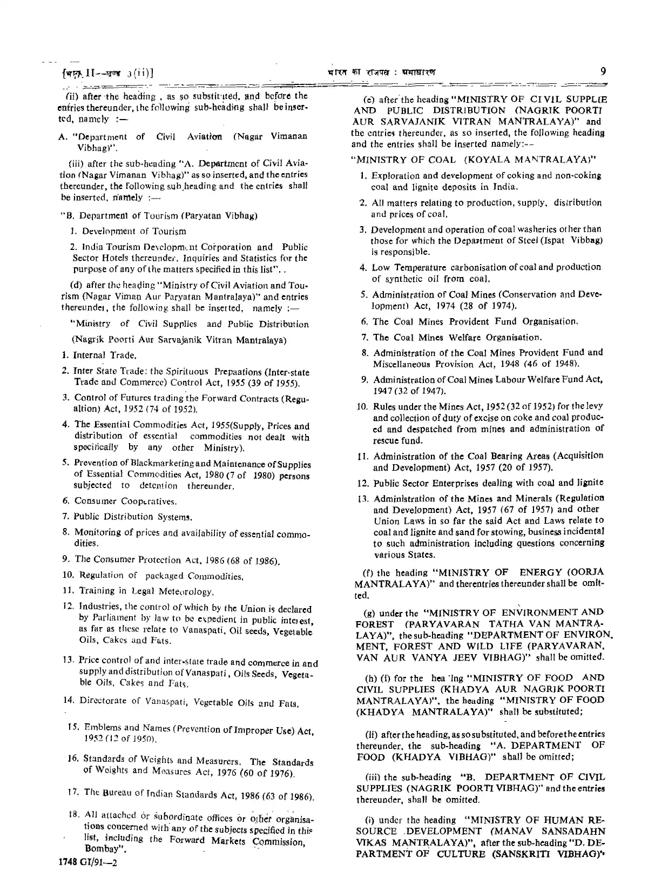
567891011121314after Schedule 2 › Ministry of Civil Aviation and Tourism
- Department of Civil Aviation
applied at schedule 2 › ministry Ministry of Civil Aviation and Tourism (Nagar Vimanan Aur Paryatan Mantralaya) in the Rules after #217
after Schedule 2 › Ministry of Civil Aviation and Tourism › Department of Civil Aviation
- B. Department of Tourism
- 1. Development of Tourism
- 2. India Tourism Development Corporation and Public Sector Hotels thereunder. Inquiries and Statistics for the purpose of any of the matters specified in this list
applied at schedule 2 › ministry Ministry of Civil Aviation and Tourism (Nagar Vimanan Aur Paryatan Mantralaya) › department B in the Rules after #217
after Schedule 2 › Ministry of Civil Aviation and Tourism
- Ministry of Civil Supplies and Public Distribution (Nagrik Poorti Aur Sarvajanik Vitran Mantralaya)
- 1. Internal Trade.
- 2. Inter State Trade: the Spirituous Prepaations (Inter-state Trade and Commerce) Control Act, 1955 (39 of 1955).
- 3. Control of Futures trading the Forward Contracts (Regualtion) Act, 1952 (74 of 1952).
- 4. The Essential Commodities Act, 1955(Supply, Prices and distribution of essential commodities not dealt with specifically by any other Ministry).
- 5. Prevention of Blackmarketing and Maintenance of Supplies of Essential Commodities Act, 1980 (7 of 1980) persons subjected to detention thereunder.
and 13 more
- 6. Consumer Cooperatives.
- 7. Public Distribution Systems.
- 8. Monitoring of prices and availability of essential commodities.
- 9. The Consumer Protection Act, 1986 (68 of 1986).
- 10. Regulation of packaged Commodities.
- 11. Training in Legal Meteorology.
- 12. Industries, the control of which by the Union is declared by Parliament by law to be expedient in public interest as far as these relate to Vanaspati, Oil seeds, Vegetable Oils, Cakes and Fats.
- 13. Price control of and inter-state trade and commerce in and supply and distribution of Vanaspati, Oils Seeds, Vegetable Oils, Cakes and Fats.
- 14. Directorate of Vanaspati, Vegetable Oils and Fats.
- 15. Emblems and Names (Prevention of Improper Use) Act 1952 (12 of 1950).
- 16. Standards of Weights and Measurers. The Standards of Weights and Measures Act, 1976 (60 of 1976).
- 17. The Bureau of Indian Standards Act, 1986 (63 of 1986).
- 18. All attached or subordinate offices or other organisations concerned with any of the subjects specified in this list, including the Forward Markets Commission Bombay
applied at schedule 2 › ministry Ministry of Civil Supplies and Public Distribution in the Rules after #217
after Schedule 2 › MINISTRY OF CIVIL supplie AND PUBLIC DISTRIBUTION
- MINISTRY OF COAL
- 1. Exploration and development of coking and non-coking coal and lignite deposits in India.
- 2. All matters relating to production, supply, distribution and prices of coal.
- 3. Development and operation of coal washerics other than those for which the Department of Steel (Ispat Vibbag) is responsible.
- 4. Low Temperature carbonisation of coal and production of synthetic oil from coal.
- 5. Administration of Coal Mines (Conservation and Development) Act, 1974 (28 of 1974).
and 8 more
- 6. The Coal Mines Provident Fund Organisation.
- 7. The Coal Mines Welfare Organisation.
- 8. Administration of the Coal Mines Provident Fund and Miscellaneous Provision Act, 1948 (46 of 1948).
- 9. Administration of Coal Mines Labour Welfare Fund Act 1947 (32 of 1947).
- 10. Rules under the Mines Act, 1952 (32 of 1952) for the levy and collection of duty of excise on coke and coal produced and despatched from mines and administration of rescue fund.
- 11. Administration of the Coal Bearing Areas (Acquisition and Development) Act, 1957 (20 of 1957).
- 12. Public Sector Enterprises dealing with coal and lignite
- 13. Administration of the Mines and Minerals (Regulation and Development) Act, 1957 (67 of 1957) and other Union Laws in so far the said Act and Laws relate to coal and lignite and sand for stowing, business incidental to such administration including questions concerning various States.
applied at schedule 2 › ministry MINISTRY OF COAL in the Rules after #217
states inferred loose
Schedule 2 › MINISTRY OF ENERGY
applied at schedule 2 › ministry in the Rules after #217
Schedule 2 › MINISTRY OF ENVIRONMENT AND FOREST › DEPARTMENT OF ENVIRONMENT, FOREST AND WILD LIFE
applied at schedule 2 › ministry MINISTRY OF ENVIRONMENT AND FORESTS › department DEPARTMENT OF ENVIRONMENT, FORESTS AND WILD LIFE in the Rules after #217
states inferred loose
Schedule 2 › MINISTRY OF FOOD AND CIVIL SUPPLIES
- MINISTRY OF FOOD
applied at schedule 2 › ministry MINISTRY OF FOOD in the Rules after #217
Schedule 2 › MINISTRY OF FOOD › DEPARTMENT OF FOOD
applied at schedule 2 › ministry MINISTRY OF FOOD › department A in the Rules after #217
Schedule 2 › MINISTRY OF FOOD › DEPARTMENT OF CIVIL SUPPLIES
applied at schedule 2 › ministry MINISTRY OF FOOD › department B in the Rules after #217
after Schedule 2 › MINISTRY OF HUMAN RESOURCE DEVELOPMENT › DEPARTMENT OF CULTURE
- E. DEPARTMENT OF WOMEN AND CHILD DEVE- LOPMENT
- 1. Family Welfare.
- 2. Women and child welfare and coordination of activities of other Ministries and Organisations in connection with this subject.
- 3. References from the United Nations Organisation relating to traffic in women and children.
- 4. Care of pre-school children.
- 5. Coordination of National Nutrition Programme, Nutrition feeding of pre-school children and Nutrition education of women.
and 10 more
- 6. Charitable and religious endowments pertaining to subjects allocated to this Department.
- 7. Promotion and development of voluntary effort on subjects allocated to this Department.
- 8. All other attached or subordinate offices or other organisations concerned with any of the subjects specified in this list.
- 9. Administration of the Suppression of Immoral Traffic in Women and Girls Act, 1956 (104 of 1956).
- 10. Dowry Prohibition Act, 1961 (28 of 1961)
- 11. Coordination of activities of Cooperative American Relief Everywhere (CARE).
- 12. Planning, Rescarch, Evaluation, Monitoring, Project Formulations, Statistics and Training relating to the welfare of women and children.
- 13. United Nations Children's Fund (UNICEF).
- 14. Central Social Welfare Board (CSWB).
- 15. National Institute of Public Cooperation and Child Development (NIPCCD)
applied at schedule 2 › ministry MINISTRY OF HUMAN RESOURCE DEVELOP- MENT › department E in the Rules after #217
Page 10 of 12
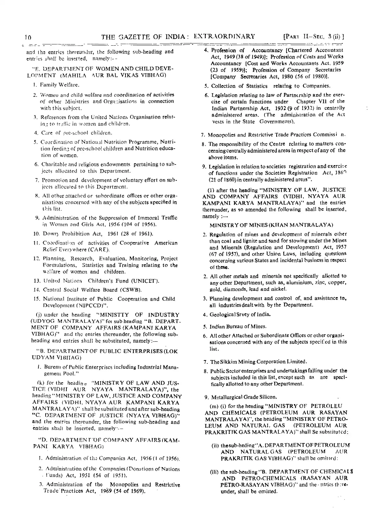
15161718192021Schedule 2 › MINISTTY OF INDUSTRY › DEPARTMENT OF COMPANY AFFAIRS
- B. DEPARTMENT OF PUBLIC ENTERPRISES
- 1. Bureau of Public Enterprises including Industrial Management Pool.
applied at schedule 2 › ministry MINISTRY OF INDUSTRY › department B in the Rules after #217
states inferred loose
Schedule 2 › MINISTRY OF LAW AND JUSTICE
- MINISTRY OF LAW, JUSTICE AND COMPANY AFFAIRS
applied at schedule 2 › ministry MINISTRY OF LAW, JUSTICE AND COMPANY AFFAIRS in the Rules after #217
after Schedule 2 › MINISTRY OF LAW, JUSTICE AND COMPANY AFFAIRS › DEPARTMENT OF JUSTICE
- D. DEPARTMENT OF COMPANY AFFAIRS
- 1. Administration of the Companies Act, 1956 (1 of 1956).
- 2. Administration of the Companies (Donations of Nations - Funds) Act, 1951 (54 of 1951).
- 3. Administration of the Monopolies and Restrictive Trade Practices Act, 1969 (54 of 1969).
- 4. Profession of Accountancy [Chartered Accountant Act, 1949 (38 of 1949)]; Profession of Costs and Works Accountancy [Cost and Works Accountants Act, 1959 (23 of 1959)]; Profession of Company Secretaries [Company Secretaries Act, 1980 (56 of 1980)].
- 5. Collection of Statistics relating to Companies.
and 4 more
- 6. Legislation relating to law of Partnership and the exercise of certain functions under Chapter VII of the Indian Partnership Act, 1932 (9 of 1932) in centrally administered areas. (The administration of the Act vests in the State Governments).
- 7. Monopolies and Restrictive Trade Practices Commission.
- 8. The responsibility of the Centre relating to matters concerning centrally administered areas in respect of any of the above items.
- 9. Legislation in relation to societies registration and exercise of functions under the Societies Registration Act, 186^ (21 of 1860) in centrally administered areas
applied at schedule 2 › ministry MINISTRY OF LAW, JUSTICE AND COMPANY AFFAIRS › department D in the Rules after #217
after Schedule 2 › MINISTRY OF LAW, JUSTICE AND COMPANY AFFAIRS
- MINISTRY OF MINES
- 1. Regulation of mines and development of minerals other than coal and lignite and sand for stowing under the Mines and Minerals (Regulation and Development) Act, 1957 (67 of 1957), and other Union Laws, including questions concerning various States and incidental business in respect of these.
- 2. All other metals and minerals not specifically allotted to any other Department, such as, aluminium, zinc, copper gold, diamonds, lead and nickel.
- 3. Planning development and control of, and assistance to all industries dealt with by the Department.
- 4. Geological Srvey of India.
- 5. Indian Bureau of Mines.
and 4 more
- 6. All other Attached or Subordinate Offices or other organisations concerned with any of the subjects specified in this list.
- 7. The Sikkim Mining Corporation Limited.
- 8. Public Sector enterprises and undertakings falling under the subjects included in this list, except such as are specifically allotted to any other Department.
- 9. Metallurgical Grade Silicon.
applied at schedule 2 › ministry MINISTRY OF MINES in the Rules after #217
Schedule 2 › MINISTRY OF PETROLEU AND CHEMICALS
- MINISTRY OF PETRO- LEUM AND NATURAL GAS
applied at schedule 2 › ministry MINISTRY OF PETRO- LEUM AND NATURAL GAS in the Rules after #217
states inferred loose
Schedule 2 › MINISTRY OF PETROLEUM AND NATURAL GAS › DEPARTMENT OF PETROLEUM AND NATURAL GAS
applied at schedule 2 › ministry MINISTRY OF PETRO- LEUM AND NATURAL GAS › department A in the Rules after #217
Schedule 2 › MINISTRY OF PETROLEUM AND NATURAL GAS › DEPARTMENT OF CHEMICALS AND PETRO-CHEMICALS
applied at schedule 2 › ministry MINISTRY OF PETRO- LEUM AND NATURAL GAS › department B in the Rules after #217
Page 11 of 12
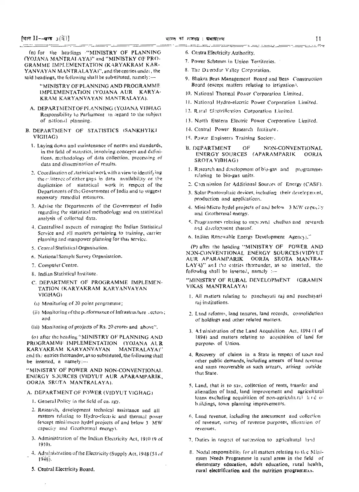
222324Schedule 2 › MINISTRY OF PLANNING; Schedule 2 › MINISTRY OF PROGRAMME IMPLEMENTATION
- MINISTRY OF PLANNING AND PROGRAMME IMPLEMENTATION
- A. DEPARTMENT OF PLANNING
- Responsibility to Parliament in regard to the subject of national planning.
- B. DEPARTMENT OF STATISTICS (SANKHYIKI VIGHAG)
- 1. Laying down and maintenance of norms and standards in the field of statistics, involving concepts and definitions, methodology of data collection, processing of data and dissemination of results.
- 2. Coordination of statistical work with a view to identifying the cistence of either gaps in data availability or the duplication of statistical work in respect of the Departments of the Government of India and to suggest necessary remedial measures.
and 9 more
- 3. Advise the Departments of the Government of India regarding the statistical methodology and on statistical analysis of collected data.
- 4. Centralised aspects of managing the Indian Statistical Service and all matters pertaining to training, carrier planning and manpower planning for that service.
- 5. Central Statistical Organisation.
- 6. National Sample Survey Organisation.
- 7. Computer Centre.
- 8. Indian Statistical Institute.
- C. DEPARTMENT OF PROGRAMME IMPLEMEN- TATION (KARYAKRAM KARYANVAYAN VIGHAG) (1) Monitoring of 20 point programme
- ii. Monitoring of the performance of Infrastructure sectors and
- ii. Monitoring of projects of Rs. 20 crores and above
applied at schedule 2 › ministry MINISTRY OF PLANNING in the Rules after #217
after Schedule 2 › MINISTRY OF PLANNING AND PROGRAMME IMPLEMENTATION
- MINISTRY OF POWER AND NON-CONVENTIONAL ENERGY SOURCES
- A. DEPARTMENT OF POWER (VIDYUT VIGHAG)
- 1. General Policy in the field of en. rgy.
- 2. Research, development technical assistance and all matters relating to Hydro-clectic and thermal power (except mini/micro hydel projects of and below 3 MW capacity and Geothermal energy).
- 3. Administration of the Indian Electricity Act, 1910 (9 of 1910).
- 4. Administration of the Electricity (Supply Act, 1948 (54 of 1948).
and 18 more
- 3. Central Electricity Board.
- 6. Centra Electricity Authority
- 7. Power Schemes in Union Territories.
- 8. The Damodar Valley Corporation.
- 9. Bhakra Beas Management Board and Beas Construction Board (except matters relating to irrigation).
- 10. National Thermal Power Corporation Limited.
- 11. National Hydro-elecrtic Power Corporation Limited.
- 12. Rural Electrification Corporation Limited.
- 13. North Eastern Electric Power Corporation Limited.
- 14. Central Power Research Institute.
- 15. Power Engineers Training Society.
- B. DEPARTMENT OF NON-CONVENTIONAL ENERGY SOURCES
- 1. Research and development of bio-gas and programmes relating to bio-gas units.
- 2. Com nission for Additional Sources of Energy (CASF)
- 3. Solar Photovoltaic devices, including their development production and applications.
- 4. Mini/Micro hydel projects of and below 3 MW copacity and Geothermal energy.
- 5. Programmes relating to improved chulhas and research and development thereof.
- 6. Indian Renewable Energy Development Agency).
applied at schedule 2 › ministry MINISTRY OF POWER AND NON-CONVENTIONAL ENERGY SOURCES in the Rules after #217
after Schedule 2 › MINISTRY OF POWER AND NON-CONVENTIONAL ENERGY SOURCES
- MINISTRY OF RURAL DEVELOPMENT
- 1. All matters relating to panchayati raj and panchayati raj institutions.
- 2. Land reforms, land tenures, land records, consolidation of holdings and other related matters.
- 3. Administration of the Land Acquisition Act, 1894 (1 of 1894) and matters relating to acquisition of land for purposes of Union.
- 4. Recovery of claims in a State in respect of taxes and other public demands, including arrears of land revenue and sums recoverable as such arrears, arising outside that State.
- 5. Land, that is to say, collection of rents, transfer and alienation of land, land improvement and agricultural loans excluding acquisition of non-agricultural krd or buildings, town planning improvements.
and 19 more
- 6. Land revenue, including the assessment and collection of revenue, survey of revenue purposes, alienation of revenues
- 7. Duties in respect of succession to agricultural land
- 8. Nodal responsibility for all matters relating to the Minimum Needs Programme in rural areas in the field of elementary education, adult education, rural health rural electrification and the nutrition programmes. 12
- 9. Water supply, sewage, drainage and sanitation relating to rural areas. International cooperation and technical assistance in this field.
- 10.
- a. All matters pertaining to rural employment or unemployment such as working out of strategies and programmes for rural employment including special works, wage or income generation and training related thereo:
- b. Implementation of the specific programmes of rural employment such as National Rural Employment Programmes (NREP). Rural Landless Employment Guarantee Programme (RI EGP) and other programmes evolved from time to time.
- c. Micro level planning related to rural employment or unemployment and administrative infrastructure therefor.
- 11. Integrated rural development, including small fain cis development agency, marginal farmers and agricultural laSourers, drought prone area programmes, etc
- 12. Desert Development Programmes.
- 13. Public cooperation. including all matters relating to voluntary agencies for rural development and National Fund for Rural Development.
- 14. Warehousing in rural areas, including rural gedowis.
- 15. Rural housing including Rural Housing Policy and all matters germane and incidental thereto under country or rural planning, in so far as it relates to rural areas.
- 16. Setting up of agricultural markets in rural areas and the Agricultural produce (Grading and marking) Act 1937 (1 of 1977).
- 17. Cooperatives relating to the items in this list. Printed by the Manager, Govt. of
- 18. All attached or subordinate offices or other organisations concerned with any of the sujects specified in this list.
- 19. All matiers retating to rural roads including those under the Minimum Needs Programme in the rural areas.
- 20. Road works financed in whole or in part by the Central Government in tribal areas of Assam secified in Part I and Part II of the Table appended to paragraph 20 of the Sixth Schedule to the Constitution.
- 21. All matters relating to cooperation with the Centre for Integrated Rural Development for Asia and Pacific (CIRDAP) and the Afro-Asian Rural Reconstruction Organisation (AARRO)“.
applied at schedule 2 › ministry MINISTRY OF RURAL DEVELOPMENT in the Rules after #217
read page break
Page 12 of 12
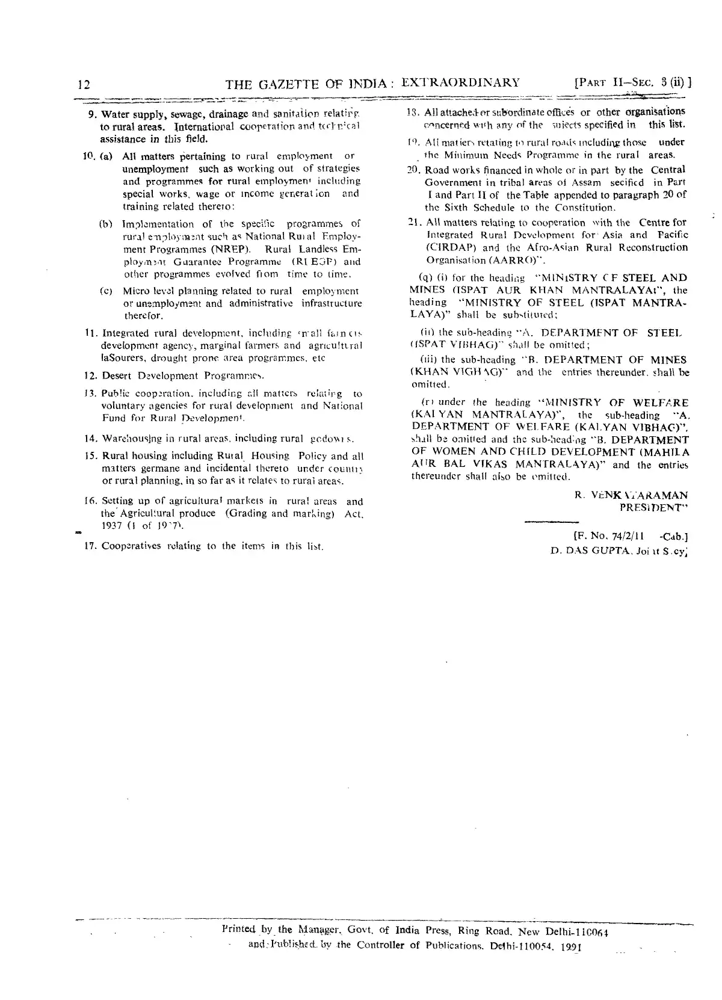
2526272829Schedule 2 › MINISTRY OF STEEL AND MINES
- MINISTRY OF STEEL (ISPAT MANTRA- LAYA)
applied at schedule 2 › ministry MINISTRY OF STEEL (ISPAT MANTRA- LAYA) in the Rules after #217
Schedule 2 › MINISTRY OF STEEL › DEPARTMENT OF STEEL
applied at schedule 2 › ministry MINISTRY OF STEEL (ISPAT MANTRA- LAYA) › department A in the Rules after #217
Schedule 2 › MINISTRY OF STEEL › DEPARTMENT OF MINES
applied at schedule 2 › ministry MINISTRY OF STEEL (ISPAT MANTRA- LAYA) › department B in the Rules after #217
Schedule 2 › MINISTRY OF WELFARE › DEPARTMENT OF WELFARE
applied at schedule 2 › ministry MINISTRY OF WELFARE (KALYAN MANTRAL AYA). › department A in the Rules after #217
Schedule 2 › MINISTRY OF WELFARE › DEPARTMENT OF WOMEN AND CHILD DEVELOPMENT
applied at schedule 2 › ministry MINISTRY OF WELFARE (KALYAN MANTRAL AYA). › department B in the Rules after #217
How this document was read
Edits to the reading
| Date | By | Edit | Before → after |
|---|---|---|---|
| 12 November 2026 | claude | word corrected | |
| 12 November 2026 | claude | word corrected | |
| 14 November 2026 | mukundesh | word corrected |
Changes placed by an inference rule
| Change | Rule | Status | What |
|---|---|---|---|
| 8 | loose | accepted | change 8: ministry MINISTRY OF CIVIL supplie AND PUBLIC DISTRIBUTION taken for ministry Ministry of Civil Supplies and Public Distribution, named loosely |
| 10 | loose | accepted | change 10: ministry MINISTRY OF ENVIRONMENT AND FOREST taken for ministry MINISTRY OF ENVIRONMENT AND FORESTS, named loosely |
| 10 | loose | accepted | change 10: department DEPARTMENT OF ENVIRONMENT, FOREST AND WILD LIFE taken for department DEPARTMENT OF ENVIRONMENT, FORESTS AND WILD LIFE, named loosely |
| 15 | loose | accepted | change 15: ministry MINISTTY OF INDUSTRY taken for ministry MINISTRY OF INDUSTRY, named loosely |
| 19 | loose | accepted | change 19: ministry MINISTRY OF PETROLEU AND CHEMICALS taken for ministry MINISTRY OF PETROLEUM AND CHEMICALS, named loosely |
From the Government of India (Allocation of Business) Rules, 1961 and their amendments, as published by the Cabinet Secretariat (cabsec.gov.in), read by orgpedia. The readings of the older scanned gazettes have known gaps.